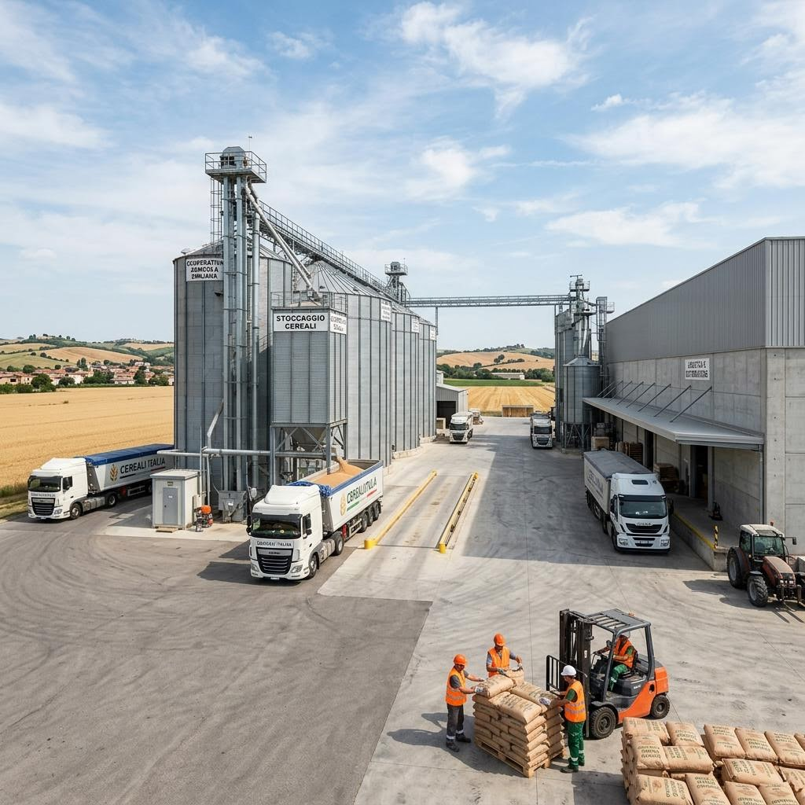

Supporto agli agricoltori
Offriamo assistenza continuativa e consulenza tecnica specializzata per migliorare la produttività e la sostenibilità delle aziende agricole.
Focus sostenibilità: CAP Nord Ovest

CAP Nord Ovest – parte del sistema Consorzi Agrari d'Italia
CAP Nord Ovest è uno dei principali consorzi agrari operanti nel nord-ovest dell'Italia, parte integrante del sistema Consorzi Agrari d'Italia (CAI). Fondato con l'obiettivo di supportare gli agricoltori locali, il consorzio opera nel settore della distribuzione di mezzi tecnici per l'agricoltura, nel ritiro e commercializzazione di cereali e nella fornitura di servizi specializzati.
Con una rete di oltre 60 punti vendita e 107 dipendenti, CAP Nord Ovest è un riferimento fondamentale per migliaia di aziende agricole del territorio, garantendo assistenza tecnica, consulenza agronomica e accesso ai migliori prodotti del mercato.
Offriamo assistenza continuativa e consulenza tecnica specializzata per migliorare la produttività e la sostenibilità delle aziende agricole.
Ritiriamo e valorizziamo oltre 200.000 tonnellate di cereali all'anno, garantendo equa remunerazione agli agricoltori del territorio.
Promuoviamo l'adozione di tecnologie avanzate e pratiche sostenibili per l'agricoltura di precisione del futuro.
Consorzi Agrari d'Italia (CAI) è il gruppo cooperativo che riunisce i principali consorzi agrari italiani. Con un fatturato consolidato di oltre 265 milioni di euro, CAI rappresenta uno dei principali operatori del settore agroalimentare italiano, con una presenza capillare sul territorio nazionale e una forte vocazione alla sostenibilità ambientale e sociale.
Il modello cooperativo di CAI garantisce che i benefici dell'attività aziendale vengano redistribuiti ai soci agricoltori, sostenendo lo sviluppo delle comunità rurali e la salvaguardia del paesaggio agrario italiano.